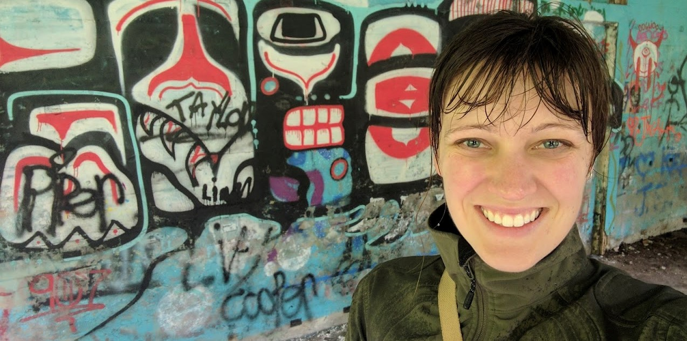

Work
Working on updating this with complete content - very much under construction.
Iquitos, Peru
I had the opportunity to travel to Peru to explore potential opportunities for collaboration, white visiting the site of a study that built floating gardens in the communities on the Amazon river. I was a casual documentarian, and here is a brief edit of the trip:Make / Build / Play
Like their popular origami cousins, kirigami creations are borne from a single sheet of paper. The kirigami technique differs by employing both folds and cuts to create simple yet evocative forms.
Kirigami
Like their popular origami cousins, kirigami creations are borne from a single sheet of paper. The kirigami technique differs by employing both folds and cuts to create simple yet evocative forms.
About
I am Molly, raised in the Pacific Northwest with a curiosity for how systems work, how they break, and how we can make them better. My background is in engineering but my passion is in increasingly around broader healthcare systems and how we can build them to enhance equity.
